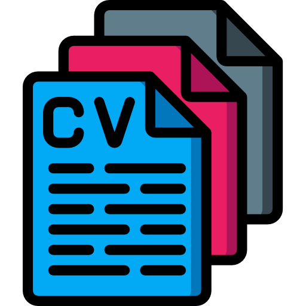

-
INÍCIO
-
TEMÁTICA 1
-
TEMÁTICA 2
-
TEMÁTICA 3
-
TEMÁTICA 4
-
TEMÁTICA 5
Apresentação da disciplina
Disciplina: Dados Públicos: estruturação, análise e aplicação
Curso: Residência em Inovação, Transformação Digital e E-gov
Carga Horária: 45 horas
Professor: Alexandre de Cassio Rodrigues
Contato: alexandrerodrigues.engprod@gmail.com
Acesse aqui o Currículo Lattes do professor
Ementa da disciplina:
Dados públicos: o que são, como devem ser estruturados?
Casos de predição e análise de dados no poder público
Atributos protegidos para decisão pública Ex: gênero, idade, raça, CEP, origem social, etc.
Cases de discriminação e erros em análise de dados. Ex: sistemas discriminam negros em fianças no EUA;
ZIP Code determina quem vai entrar em Ivy League; etc
Fontes de dados: portais de transparência, dados protegidos, dados de entidades externas
A Lei Geral de Proteção de Dados (LGPD) do Brasil.
Apresentação:
Olá, Residentes!
Sou Alexandre de Cássio Rodrigues, professor da disciplina "Dados Públicos: Estruturação, Análise e Aplicação" e também mentor de dez estudantes do Integre. Trabalho na Agência Nacional de Mineração (ANM), uma autarquia federal vinculada ao Ministério de Minas e Energia, onde coordeno a distribuição de royalties da mineração no Brasil (cerca de R$ 7 bilhões por ano), bem como desenvolvo soluções baseadas em dados que possam auxiliar a tomada de decisões.
Relembro que a transformação digital na esfera pública trouxe a necessidade de uma abordagem orientada por dados para a tomada de decisões. Este paradigma, denominado de Data-Driven, tem sido crucial para otimizar operações, melhorar serviços e aumentar a eficiência governamental. Neste contexto, os dados são considerados ativos estratégicos, fundamentais para a promoção de governos mais transparentes, responsivos e eficazes. Portanto, ao dominar a análise de dados, você terá uma oportunidade incrível de alavancar a sua carreira.
Nossa disciplina será do tipo “mão na massa”. Você desenvolverá um projeto que te possibilitará colocar em prática as habilidades necessárias para estruturar e analisar dados públicos. Isso poderá ser o ponto de partida para o seu Trabalho de Conclusão de Curso. Estou muito animado. E você?
Forte abraço,
Alexandre.
Teremos ao todo 5 semanas de estudo desde 12/02/24 até 15/03/24, sendo que nossos encontros síncronos nas LIVES ocorrerão nos dias 15/02/24, 20/02/24, 27/02/24, 05/03/24 e 12/03/24. A 5ª semana.
Lei nº 13.709, de 14 de agosto de 2018
Na primeira live será abordada a Lei Geral de Proteção Dados Pessoais, sancionada em 2018 com a
lei
nº 13.709, a legislação regulamenta uma série de cuidados que tanto o poder público como pessoa
natural ou
pessoa jurídica de direito privado, precisam ter ao acessarem, armazenam ou simplesmente terem
contato com dados pessoais. O objetivo é proteger os direitos fundamentais de liberdade, de
privacidade e o livre desenvolvimento da personalidade da pessoa natural. Os detalhes que LGPD
trás nos fazem repensar o trabalho de atendimento da população no serviço público, bem como o uso
dados do cotidiano, pois de uma forma ou de outra, em todas as frentes do setor público
trabalhamos com dados a população.
Data da Live: 08/11/2022
Horario: 19:30
Link - Aula síncrona de conteúdo:

Lei Geral de Proteção Dados Pessoais
Acessem o texto a seguir que se trata da íntegra da Lei Geral de Proteção de Dados Pessoais, Lei
nº
13.709 de 2018, e façam a leitura:
O conhecimento da Lei fundamenta a discussão sobre os princípios presentes na regulamentação
• Finalidade: qual é o motivo do trabalho com os dados?
• Necessidade: qual é a necessidade?
• Transparência: o trabalho com os dados precisa ser transparente
• Segurança: os dados precisam ser protegidos
• Não discriminação: os dados coletados nãao devem ser discriminatórios
• Qualidade dos dados: os dados precisam ser passíveis de atualização
Prestação de contas: deve ser possível prestar conta sobre o trabalho realizado com os dados
• Livre acesso: assegurar o acesso aos dados ao titular.
Agora, visualizem o vídeo a seguir, no trecho dos 21min5s à 52min39s
O vídeo indicado diz respeito a uma palestra organizada pelo Ministério das Comunicações,
exibida
ao vivo em 09/06/2022, trata da atuação da ANPD e questões de adequação à LGPD para o Setor Público.
Fórum para Troca de Experiências
Atividade 1: Fórum de discussão
Título: Como os cuidados apregoados pela LGPD afetam o cotidiano do meu trabalho no serviço público?
Clique no botão abaixo para acessar o fórum
Fórum 01

Clique no botão abaixo para acessar o fórum
Fórum 02
Análise de casos
Analise detalhadamente os três casos destacados abaixo e verifique se as práticas estão de acordo com a LGPD e/ou quais cuidados são necessários ao se deparar com cada uma das situações, respeitando a LGPD. Após realizar as análises pertinentes e discorrer a respeito de cada uma delas, envie seu arquivo no ícone de atividade.
Caso 1
Matrícula de estudante em universidade pública Universidade pública solicita de novos estudantes o fornecimento de dados pessoais necessários para fins de cadastro e matrícula. O procedimento é realizado online e, para prosseguir para as etapas seguintes, com a escolha de disciplinas e horários, o estudante deve “aceitar” as condições estipuladas para o tratamento de seus dados. Essas condições são descritas de forma genérica, com a indicação de que os dados poderão ser utilizados para “fins educacionais e outros correlatos”. Uma mensagem indica que, caso não fornecido o consentimento, a matrícula não será concluída e o estudante não terá acesso ao curso e a serviços como os de assistência estudantil e empréstimo de livros na biblioteca.
Caso 2
Política pública de vacinação A Secretaria de Saúde de um município coleta dados de casos confirmados de uma doença infecciosa para fins de desenho, implementação e monitoramento de uma política pública de vacinação. Os dados são compartilhados com um órgão de pesquisa, para a finalidade específica de realização de estudos em saúde pública. Neste caso, o tratamento posterior dos dados é compatível com a finalidade original da coleta, em conformidade com o princípio da finalidade.
Clique no botão abaixo para enviar a atividade de estudo de caso
Atividade

Check list das Atividades da Unidade I
-
Atividade 1: Participei da live
Atividade 2: Fiz a leitura/consultei da Lei nº 13.709
Atividade 3: Participei do fórum
Atividade 4: Analisei os estudos de caso
Atividade 5: Assisti ao vídeo recomendado
Lei de Acesso à Informação - Lei nº 12.527, de 18 de novembro de 2011
A lei de acesso à informação, aprovada em 2011 aponta uma série de elementos, por exemplo,
obriga que fique à disposição as informações sobre todo o funcionamento e prestação de contas da
administração pública, bem como de quem recebe benefício público. Tendo em vista, a regulamentação
posta pela lei de acesso à informação, qual é o impacto no cotidiano do serviço público? Em que
medida o que está posto na lei expõe e democratiza o acesso?
Data da Live: 22/11/2022
Horario: 19:30
Link - Aula síncrona de conteúdo:
Lei de Acesso à Informação
Acessem o documento a seguir, qual se trata de um Ranking das prefeituras da região Sul do Brasil: uma avaliação a partir de critérios estabelecidos na Lei de Acesso à Informação

Este artigo faz uma importante discussão sobre a lei de acesso à informação, abordando temas como a utilização das TICs pela administração pública, a regulamentação do acesso à informação no Brasil, o histórico da legislação brasileira sobre o tema, além da análise dos municípios da região sul no que tange ao acesso à informação. Agora, visualizem o vídeo a seguir:
Episódio 3 - A Lei de Acesso à Informação (LAI), aprovada pelo Congresso Nacional, permitiu a qualquer cidadão ou cidadã solicitar informações mantidas pelo poder público. Agora, uma década depois da promulgação, a lei pode passar por mudanças. Vários projetos em tramitação na Câmara alteram trechos da LAI. Um dos pontos mais polêmicos é o sigilo de 100 anos para informações pessoais.
Autoavaliação de competências de inovação.
Atividade 1: Pesquisa
Clique no botão abaixo para acessar a Atividade
Atividade
Check list das Atividades da Unidade I
-
Atividade 1: Leitura do artigo
Atividade 2: Assistir ao vídeo da câmara dos deputados sobre a LAI
Atividade 3: Pesquisa sobre a aplicabilidade da Lei de acesso à informação (LAI) no órgão/entidade onde atuo
Lei da Transparência - Lei complementar nº 131, de 27 de maio de 2009 e a Lei de Responsabilidade Fiscal - Lei Complementar no 101
O objetivo da temática desta semana é trabalhar com o conteúdo da Lei nº 131 e da Lei nº 101 e problematizar com relação aos demais conteúdos trabalhados, como a LAI e a LGPD.
Data da Live: 29/11/2022 (terça)
Horario: 19:30
Link - Aula síncrona de conteúdo:
Lei da Transparência Lei Complementar nº 101 de 2000

Lei que estabelece normas de finanças públicas voltadas para a responsabilidade na gestão fiscal e dá outras providências.
Lei Complementar nº 131 de 2009

Acrescenta dispositivos à Lei Complementar no 101, de 4 de maio de 2000, que estabelece normas de finanças públicas voltadas para a responsabilidade na gestão fiscal e dá outras providências, a fim de determinar a disponibilização, em tempo real, de informações pormenorizadas sobre a execução orçamentária e financeira da União, dos Estados, do Distrito Federal e dos Municípios.

Sugere-se a leitura da página 88 a 105, o trecho faz parte do capítulo da tese que aborda a transparência pública como pressuposto para a garantia dos direitos sociais.
Neste vídeo que faz parte do curso "Transparência e Direito de Acesso à Informação" vamos entender como o tema da transparência e do acesso à informação vem sendo tratado no Brasil, após a Constituição de 1988. Especialista: Fernando Meloni Realização: Escola de Governo do Estado de São Paulo - Egesp
Análise do Material
Comente o quadro 2 disponível na página 91 do documento abaixo. O quadro aborda as alterações que a Lei da Transparência trouxe para a lei de responsabilidade fiscal. Analise quais foram as mudanças e a relevância dessas alterações
Acesse o quadro aqui
Atividade
Check list das Atividades da Unidade I
-
Atividade 1: Consulta da Lei complementar nº 101 de 2000
Atividade 2: Consulta da Lei complementar nº 131 de 2009
Atividade 3: Leitura do Capítulo da tese
Atividade 4: Análise da tabela organizada por QUIRINO (2018)
Atividade 5: Assistir ao Vídeo
Portais de acesso aos dados públicos
Cursistas, saudações! Ao longo das aulas estudamos a LGPD, a Lei de Acesso à Informação, a Lei da Transparência e a Lei da Responsabilidade Fiscal, agora chegamos na etapa da disciplina que olha para os pressupostos legais organizados em sites e portais que disponibilizam dados públicos. Esses recursos, além de tornarem as informações acessíveis para a população, também contribuem para o planejamento e organização do serviço público, por exemplo, na educação ter o conhecimento da ampliação ou redução do número de matrículas contribui para a estimar construção de escolas; os dados do Censo populacional permitem planejar a expansão do serviço público da saúde; os levantamentos realizados sobre a segurança pública contribuem para elaborar estratégias de trabalho e o simples fato de todos os gastos públicos estarem publicizados na internet dão transparência ao uso dos recursos.
Resumo do que será estudado e trabalhado durante a temática da semana
Data da Live: 06/12/2022 (terça)
Horario: 19:30
Link - Aula síncrona de conteúdo:
Acesso a dados públicos
Os desafios da Administração Pública na disponibilização de dados sensíveis. Autores: Tânia Carolina Nunes Machado Gonçalves e Marcelo D. Varella, 2018.

O artigo foi escrito em 2018 e analisou os modelos do Instituto Brasileiro de Geografia e Estatística (IBGE), do Instituto Nacional de Estudos e Pesquisas Educacionais Anísio Teixeira (Inep) e do Instituto de Pesquisa Econômica Aplicada (Ipea), apontando suas principais semelhanças e diferenças, no que tange a Lei de Acesso à Informação.
Questionário para análise de um portal que forneça dados públicos
Escolha um dos portais públicos citados abaixo ou outro que você desejar e conhecer que disponibilize
dados públicos e analise como está organizado e quais informações ele disponibiliza, procure avaliar:
Qual site/portal da transparência você analisou?
Que tipo de informações ele disponibiliza?
A qualidade das informações, e a forma com que são disponibilizadas são de fácil interpretação?
Para buscar algum dado é preciso percorrer um caminho longo no site, com muitos cliques, ou a
navegação é intuitiva?
Imagine qual/quais informações este portal pode fornecer e tente localizar no site.Você conseguiu
localizar?
Se uma informação não estiver disponível, ou caso o cidadão queira mais detalhes, existe um campo para
realizar solicitações?
Lista de sites/portais públicos: (você também poderá escolher outro que não esteja na lista)
Portal da transparência do Governo do Estado do Paraná:

IBGE - Cidades@:

Portal da transparência - Controladoria Geral da União:

Transparencia Coronavirus - Curitiba:

Estatísticas da Secretaria de Segurança Pública do Paraná:

Dados aberto do INEP - Instituto Nacional de Estudos e Pesquisas Educacionais Anísio Teixeira:
.png)
Clique no botão abaixo para acessar o Questionário
Atividade
Check list das Atividades da Unidade I
-
Leitura do artigo
Realizar a análise de um portal, conforme as perguntas orientadoras do questionário
O trabalho com dados sensíveis
A partir da discussão feita por Mariana Joffily em seu artigo sobre os impasses entre o direito à informação e o direito à vida privada, o objetivo é problematizar o trabalho, o uso e a disponibilização de dados sensíveis.
Data da Live: 20/12/2022 (terça)
Horario: 19:30
Link - Aula síncrona de conteúdo:

O artigo, aborda o tema da transparência para além do acesso aos arquivos da ditadura, pois retoma a transição brasileira para a democracia e debate o direito à informação e direito à vida privada
Vídeo elaborado pela TVUFBA sobre os dados sensíveis conforme a LGPD. A coleção completa de vídeos elaborados pela Universidade Federal da Bahia estão nesse link

USAR UMA FERRAMENTA QUE OS CURSISTAS POSSAM ENVIAR INDIVIDUALMENTE A ESCRITA DE UM PARÁGRAFO.
Dados Sensíveis
Conforme o artigo 5º da Lei Geral de Proteção de dados disponível aqui: http://www.planalto.gov.br/ccivil_03/_ato2015-2018/2018/lei/l13709.htm escreva um paragrafo, explicando com suas palavras, a diferença entre dado pessoal e dado sensível, destaque porque a lei diferencia essas informações e o que leva um dado a ser sensivel.
Clique no botão abaixo para acessar a atividade
Atividades
Atividade complementar
REALIZAR A LEITURA DO MATERIAL A SEGUIR E PRODUZIR UMA RESENHA: Políticas Públicas Orientadas Por Dados: Os Caminhos Possíveis Para Governos Locais. Autores: Pablo Cerdeira, Marcus Mentzingen de Mendonça, Urszula Gabriela Lagowska (2020)
Clique no botão abaixo para enviar a atividade complementar
Atividade ComplementAR
Check list das Atividades da Unidade I
-
Atividade 1: Leitura do artigo
Atividade 2: Assistir o vídeo
Atividade 3: Realizar a atividade